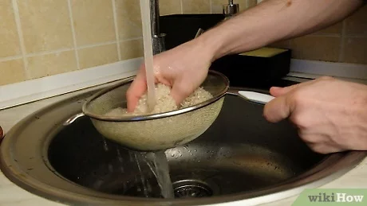

Sushi!
Sushi is a beloved Japanese dish that is eaten all over the world. If
you would like to try making this healthy food, you first need to
collect the proper ingredients from your nearest grocery store or
market. Once you have prepared your sushi rice, set out your bamboo
mat beneath a sheet of nori, or seaweed, and arrange your rice and
toppings on top. After rolling and slicing your sushi, you will be
ready to enjoy your roll!
Ingredients:
- 2 cups (400g) of sushi rice
- 3 cups (710ml) of cold water
- 0.25 cups (59 mL) of rice vinegar
- ¼ cup (25 g) of granulated sugar
- 1 tsp (5.7 g) of salt
- 1 pack of unseasoned nori (seaweed sheets)
- Sliced vegetables
- Sliced fish or seafood
- Pickled ginger (optional)
- Wasabi (optional)
Steps:
-

Strain 2 cups (400 g) of sushi rice under running water.
Take a large amount of rice and place it in a mesh strainer. Hold the dry
rice beneath cool running water, rotating the strainer so all of
the rice gets soaked. Keep an eye on the water dripping beneath
the strainer—once the water looks clear and not clouded, you can
turn off the faucet and remove the wet rice from the sink area.
- Cleaning your rice is an important process in the sushi-
making process, as it helps improve the quality of the rice.
- It might take a minute or so before the water looks clear,
depending on how much rice you are using.
-
Add water and rice to a saucepan in a 3:2 ratio.
Pour your damp rice into an empty saucepan. Next, dump in about 1.5 cups
(350 mL) of cold water. Make sure that there is more water than rice in the
saucepan, as sushi rice is extremely absorbent.
- If you do not add enough water to your rice, it will be
dry instead of fluffy.
-
Cook the rice for 10 minutes after the water boils.
Wait for the water in the pot to reach a boil, then set a timer for 10 minutes
so the rice can fully cook. Cover the saucepan with a lid so the rice
can absorb as much water as possible. Do not lift the lid and stir the rice,
as this can make the grains mushy and congealed.
- If you added too much water to the rice, it might not be
able to soak up the water.
See Other Recipe: Lasagna
Return to Previous Page